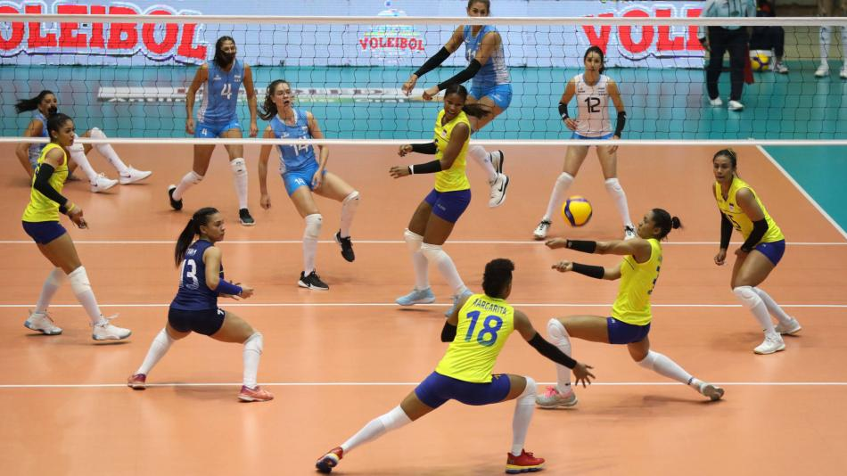

¿Que es el voleibol?
Historia
El voleibol (inicialmente bajo el nombre de mintonette) nació el 9 de febrero de 1895 en Estados Unidos, en Holyoke, Massachusetts. Su inventor fue William G. Morgan, un director de educación física de la YMCA. Se trataba de un juego de interior
por equipos con semejanzas al tenis o al balonmano. Aunque próximo en su alumbramiento al baloncesto por tiempo y espacio, se distancia claramente de éste en la rudeza, al no existir contacto entre los/as jugadores/as atrin
El voleibol, balonvolea o simplemente voley, es un deporte donde dos equipos se enfrentan sobre un terreno de juego liso separados por una red central, tratando de pasar el balón por encima de la red hacia el suelo del campo
contrario. El balón puede ser tocado o impulsado con golpes limpios, pero no puede ser parado, sujetado, retenido o acompañado. Cada equipo dispone de un número limitado de toques para devolver el balón hacia el campo
contrario (un máximo de tres).
Habitualmente el balón se golpea con manos y brazos, pero también con cualquier otra parte del cuerpo. Una de las características más peculiares del voleibol es que los jugadores y las jugadoras tienen que ir rotando sus posiciones
a medida que van consiguiendo puntos
"No se limite a vencerlos, déles una impresión duradera que los haga no querer volver a ver su cara». Mia Hamm
Mundial de voleibol

Así quedaron los grupos del Campeonato Mundial de Voleibol Femenino 2022,
que se disputará del 23 de septiembre al 15 de octubre del 2022 en seis sedes
diferentes de Países Bajos y Polonia.Además, se definieron las sedes de los grupos,
donde la principal ciudad será Arnhem en Países Bajos. Allí se acogerán más partidos,
contará con un partido: del grupo A, del B, del C y del D, también parte de la fase final
. La fase final se dividió en tres sedes: Arnhem, Países Bajos; Róterdam, Países Bajos y Gliwice, Polonia.
Colombia tendrá que jugar todos sus partidos de la fase de grupos en la instalación de GelreDome en Arnhem,
Países Bajos.
Algunas cosas sobre el voleibol.
Tecnicas del voleibol
Descarga tu imagen
Email
Clubes importantes:
Bogota
- Wizard Volley Team
- OPA Volley Club
- Club Deportivo EmmanuelFC
Clubes importantes de forma ordenada
Bogota
- Club Deportivo EmmanuelFC
- Wizard Volley Team
- OPA Volley Club